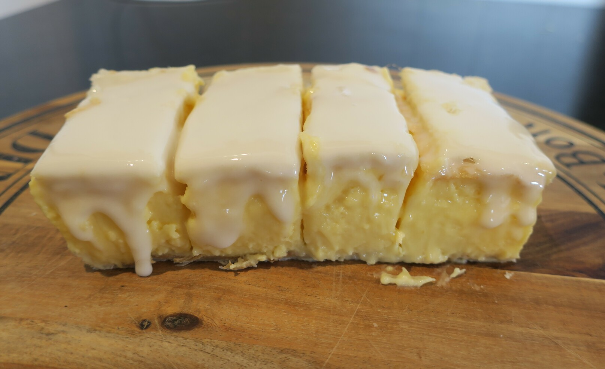

Vanilla Slice
Basically just custard with pastry and icing on top

2 sheetsof puff pasty
Prick puff pastry with a fork and bake for 10-15 minutes at 220C
2/3 cupcaster sugar2/3 cupcustard powder4 cupsmilk4 tspvanilla essence
Make the custard
Let everything cool slightly
300mlthickened cream
Beat cream and add to custard
Place in a square tin, pastry, custard, pastry
1 cupicing sugar1 tspvanilla- hot water
Make icing and put on top
Put in the frige to set